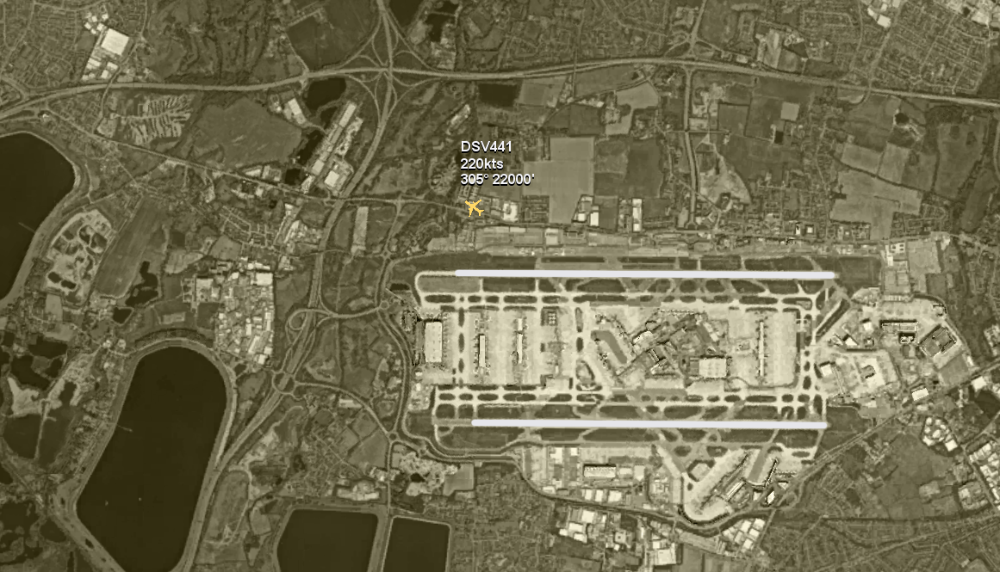
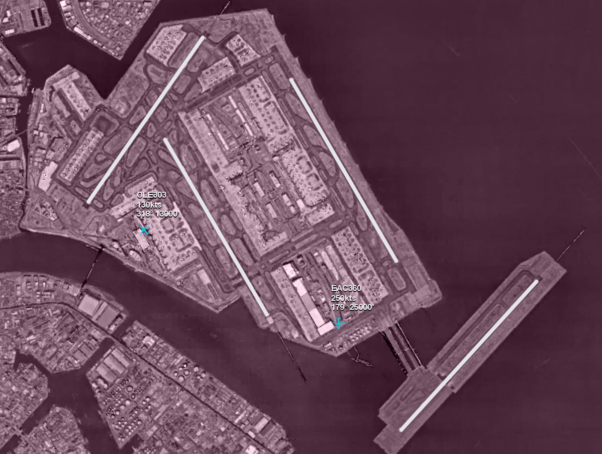

PlainPlanes
Overview
PlainPlanes is a little program I made inspired by various flight and ATC simulators. It’s two-dimensional and viewed from above—so it’s basically a (very simple) flight simulator from an air traffic controller’s perspective. Usually what I do is edit the plane’s position so it’s lined up with a runway, then try to land the thing and taxi to a gate. To learn how to download and run PlainPlanes, what the controls are, and what airports are included, keep reading. Otherwise, the download link is at the top of this page.
How to Download & Run
- Make sure your Java is at least version 20, PlainPlanes may not open when run with earlier versions
- Click the first link above to download the latest PlainPlanes .jar file
- Run the .jar by opening it with Java
Controls & Additional Information
- W/S — speed up/down by 10kts (between -1,000kts and 1,000kts)
- A/D — turn left/right by 1°
- Q/E — descend/ascend 500’ (between 0’ and 100,000’)
- SHIFT — toggle heading indicator (yellow line ahead of your plane, see above picture)
- SPACE — pause/unpause
- 0-9 — select airport (only when paused)
- ARROW KEYS — move background (only when paused)
- ENTER — add random plane
- BACKSPACE — remove last plane (you can’t remove your plane)
- LEFT CLICK — toggle edit mode (only when paused)
- ESCAPE — quit
- You accelerate/decelerate faster when on the ground
- You turn much faster when on the ground
- If your plane (highlighted in yellow) goes off the screen, you assume control of the next available plane
- All planes (that includes you) start with a random call sign, speed (100-240kts), and heading
- Your starting altitude is 100 times your speed
Airports
0 — Toronto Pearson International Airport (YYZ/CYYZ)
1 — Tokyo International Airport (HND/RJTT)
2 — Amsterdam Airport Schiphol (AMS/EHAM)
3 — Heathrow Airport (LHR/EGLL)
4 — Hartsfield–Jackson Atlanta International Airport (ATL/KATL)
5 — Vancouver International Airport (YVR/CYVR)
6 — Abbotsford International Airport (YXX/CYXX)
7 — John C. Munro Hamilton International Airport (YHM/CYHM)
8 — London International Airport (YXU/CYXU)
9 — Billy Bishop Toronto City Airport (YTZ/CYTZ)
Changelog
PlainPlanes v6 (2023-10-29)- fixed a bug where the game soft crashes if you resize the window while the game is paused
- unknown
- unknown
- unknown
- unknown
- unknown
Attribution
- Java from Oracle and whoever else have ever contributed to or distributed Java
- The HSA2 graphics library
- Math
- Airport background images from Google Earth and Google Earth’s imagery partners
- Runway highlights based on FAA (?) diagrams from OpenNav
- Colours from Coolors
- Fonts from Google Fonts (Roboto Slab, Roboto Mono) and Adobe Fonts (Cubano)
- Stack Overflow and other online resources for programming help
- Airplanes
- Photoshop, Affinity Designer, IntelliJ, and all the other programs I used
- Thanks to everyone who tried out the game, provided feedback, or helped spot and fix bugs!